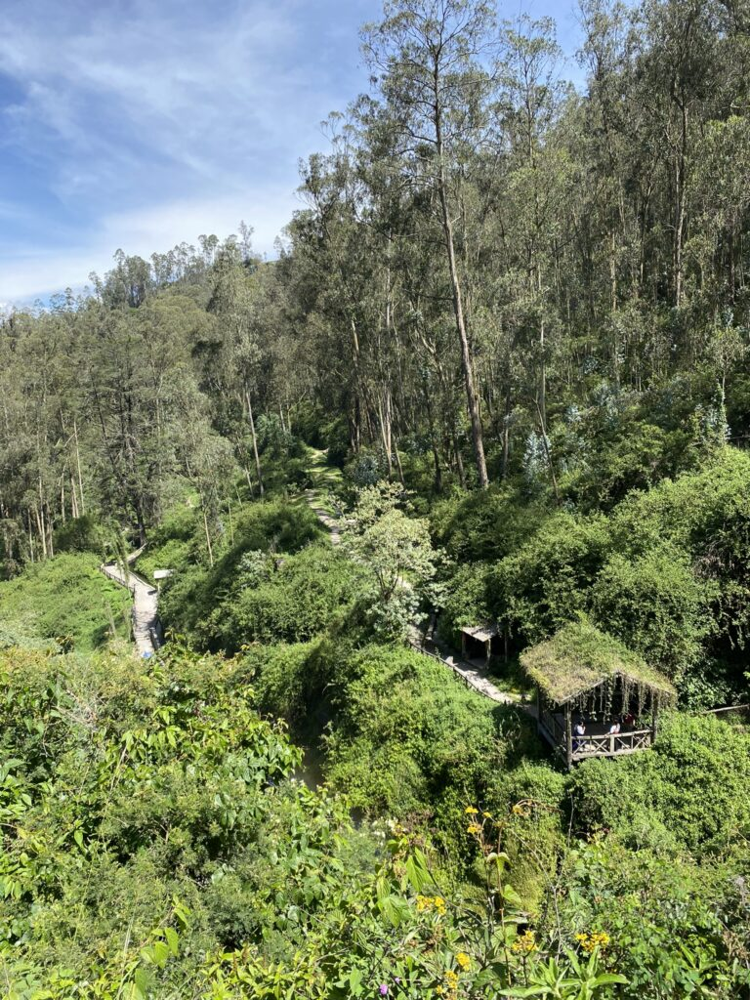
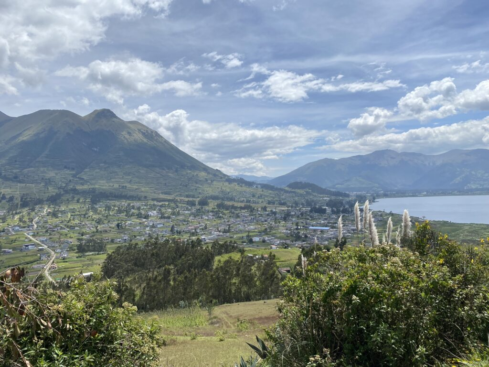
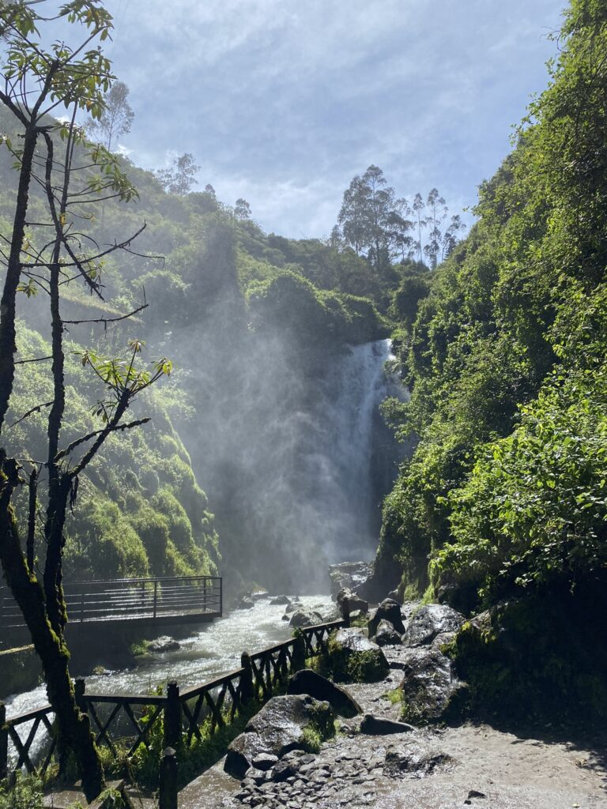
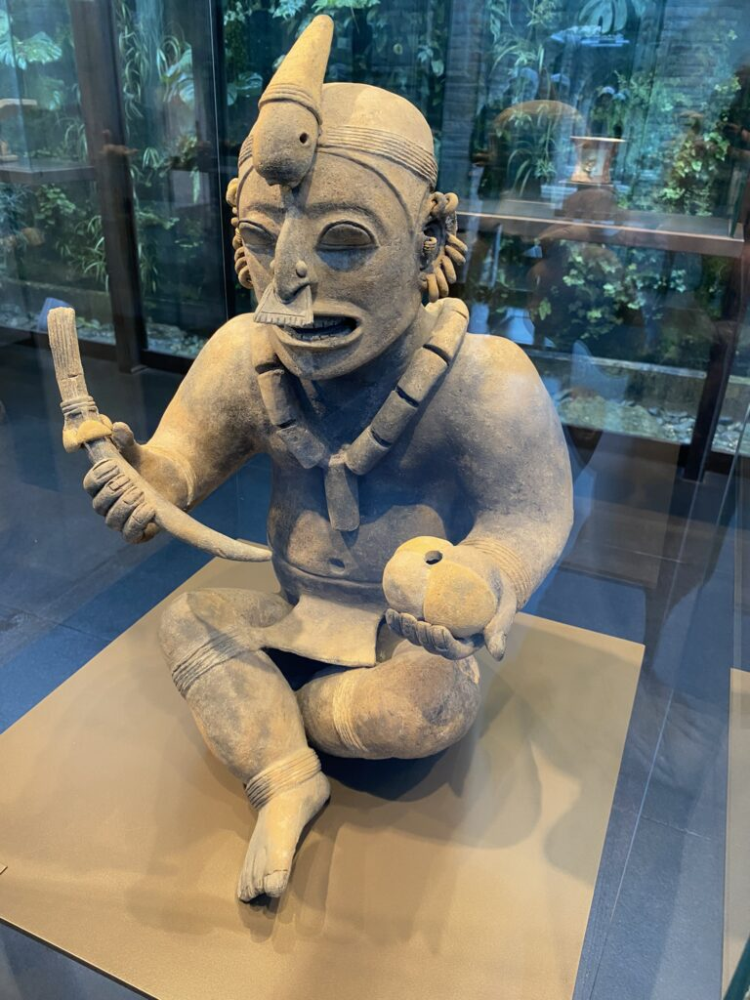
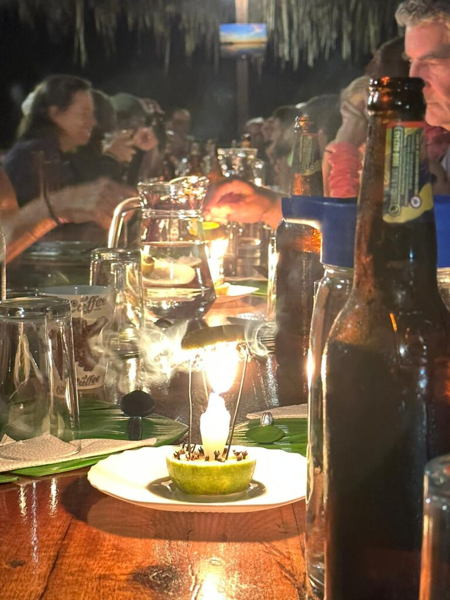

De slingerende bergwegen leiden me naar Otavalo, het equivalent van een niet-Europees Hanze-stadje waar een van de grootste markten van het continent plaatsvindt. De kraampjes stralen ook middelseeuwe sferen uit omdat de handelswaar bestaat uit klederdracht en andere niet-elektrische hebbedingetjes. Het hele dorp lijkt verwikkeld in een waterballongevecht geleid door de aandoenlijke kindjes in schooluniform, genietend van het feit dat er nauwelijks toeristen te vinden zijn, wat mij een reus maakt die regelmatig bruine ogen doet vergroten. Als ik een zakje nootjes doneer aan een bedelaar is hij zo dankbaar dat hij minutenlang kruisjes slaat richting het lokale kerkje. De warmte wakkert een vreemd soort zweten aan en bereikt z’n hoogtepunt als ik weer eens aan een klim begin, in een prachtige verlaten, groene vallei met watervallen en een roofvogelpark. De uitzichten bieden zicht op verbluffende kratermeren en bebouwing over de golvende aardplaat. De paden op de kaart kloppen niet en ik ben nog nooit zo zaligmakend verdwaald.



Na weinig Engels pratende zielen bevalt een terugkeer op de vaste basis in Quito goed, met vooruitzicht op een trip naar de eindeloos fascinerende amazone. Eerst speel ik de hoofdstad zoveel mogelijk uit. Een nieuwe skilift brengt me 1500 meter hoger voor een nieuwe blik op de enorme stad met een door suburbs omringd historische centrum en een enorme basilisk met een bar bovenin. Ik dompel me onder in de pre-Spaanse geschiedenis die gedomineerd wordt door elite priesters, krijgers en vooral shamans, die namens de bevolking contact zochten met de onder- en bovenwereld. Geven en voeden waren hun privileges. Opgedost in kleurige, spirituele materialen konden zij transformeren tot iemand met buitenaardse capaciteiten die postpode speelt voor de geesten en voormalige heersers. Uitgebeeld met erectie of slappe piemel, geen vageintjes, werden zijn overtoept door dwergen, lammen, kreupelen en hazenlippen, die nog meer verbonden waren met de spirituele wereld. Oogst, dieren, voedsel en botten van heersers zijn tentoongesteld in potten in de vorm van de baarmoeder, als symbool voor de terugkeer naar het begin van leven.

Diep ademhalen
Precies op het juiste moment vertrek ik naar het groene hart van de wereld, als er geen drank wordt geschonken vanwege de lokale verkiezingen. De trip zal uitgroeien tot een van de grootste cadeaus die ik deze reis ervaar. Het klikt meteen met een groep van vier en ik krijg spierpijn van het lachen om de dieren, onze maffe reisgenoten, de cultuurverschillen en het leven, dat uitnodigt om nooit te vertrekken. Geen signaal en dus geen telefoon voor een kleine week is een zegen. De stroom berichtjes, (slecht) nieuws, pushmeldingen en online verleidingen die na afloop binnenstroomt vallen rouw op het dak. De natuur biedt zoveel dat ik geen moment naar iets anders snak.
Uren spenderen we in de boot die dobbert in de Cuyabeno-rivier. Soms in de 38 graden zon, dan weer in de stromende regen. De kwantiteit in zichtbare dieren is significant minder dan in de Pampas van Bolivia, maar daar staat het dichtbegroeide regenwoud tegenover. Desondanks vinden we tijdens het speuren diverse soorten apen (waaronder de bruller die ‘s ochtends vroeg trouw de jungle wakker schrikt), kaaimannen, dolfijnen, vissen, luiaards, insecten, en nog veel meer. Niet te vergeten de honderden soorten vogels die magische klanken creëeren in de dichte damp van het onvergelijkbare klimaat. De geluiden worden afgewisseld met de verwoed klikkende camera’s van reisgenoten die zorgen dat ik zelf niks hoef vast te leggen. Ook de boa constrictors en de zeldzame anaconda- en bananenspin komen voorbij. Zelfs als je op de wc zit klimt er met regelmaat een groep primaten in je blikveld.
Altijd licht
Van slapen komt weinig. Tot diep in de nacht hangen we in matten en verzamelen ons bij kaarslicht aan houten tafels met het krekelkoor op de achtergrond. Vroeg op voor de indrukwekkende wandeltochten door de groene jungle. Ik heb nog beter uitzicht dan de rest, klauterend aan een liaan richting de apen. De beboste bodem loopt over in moeras met verborgen mini-kaaimannen en boomstambruggen over de rivier. De bewolkte en warme lucht duwt me door de dag heen. Een sup-avontuur met landgenoot Quinten over de rivier eindigt bijna fataal omdat we met de stroming mee zijn gepeddeld en niet terug komen. Voordat we om de hoek verdwijnen worden we gespot vanaf de lodge en haalt de gids ons op in zijn langwerpige boot.

De schok
Een andere interessante onderneming brengt ons na een hike bij een inheems dorp, dat wel enigzins verwikkeld is met het kapitalisme. We koken met de in de omgeving groeiende producten een soort wortelpannenkoeken en kopen sieraden van jungle-materiaal. Daarnaast legt een medicijnman de lokale geneesmiddelen uit. We proeven van de ayahuasca en ondervinden in levende lijve hoe lichamelijke pijn daar bestreden wordt. De dokter slaat met een uitslagverwekkende, stekelachtige plant hard op je huid en balsemt daar vervolgens een bepaalde olie overheen. Na 10 minuten kwelling zou het lichaamsdeel geheeld moeten zijn, maar dat lijkt een loze belofte. Sommige stammen zijn nog steeds verwijderd van de mondiale beschaving en kennen alleen andere mensen van de helikopters die de inheemsen kwamen uitmoorden om meer olie te kunnen boren. Geen manier om dat nog goed te maken.
Een bootreis en ellenlange busrit terug brengt me met een schok weer terug in de burgerij. Tot zover het avontuur in de amazone, die altijd uitnodigt tot meer en zolang ik leef mijn longen zal voeden met zuurstof.